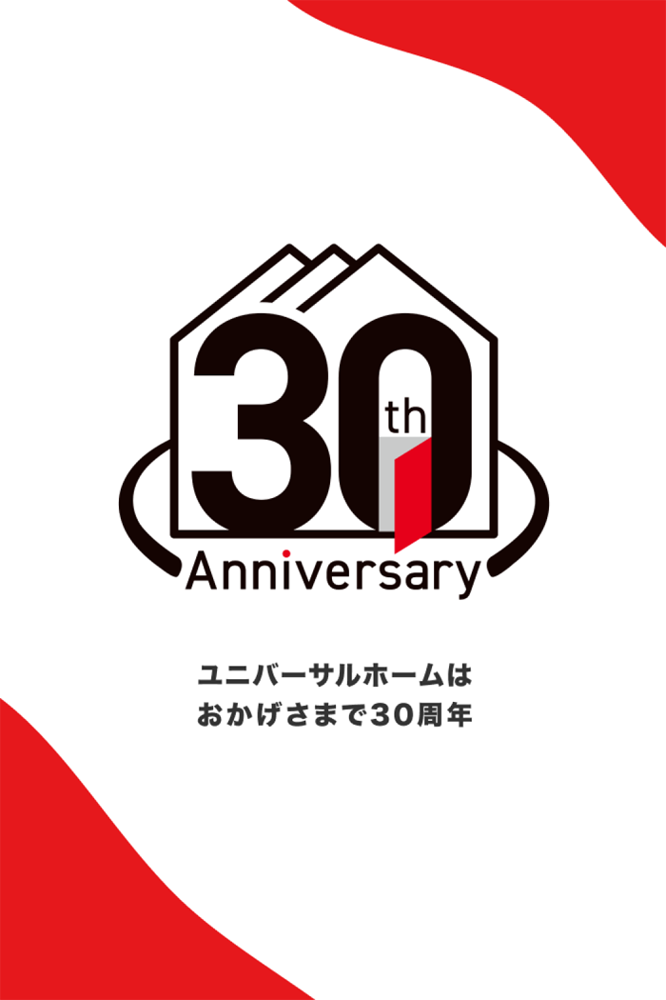
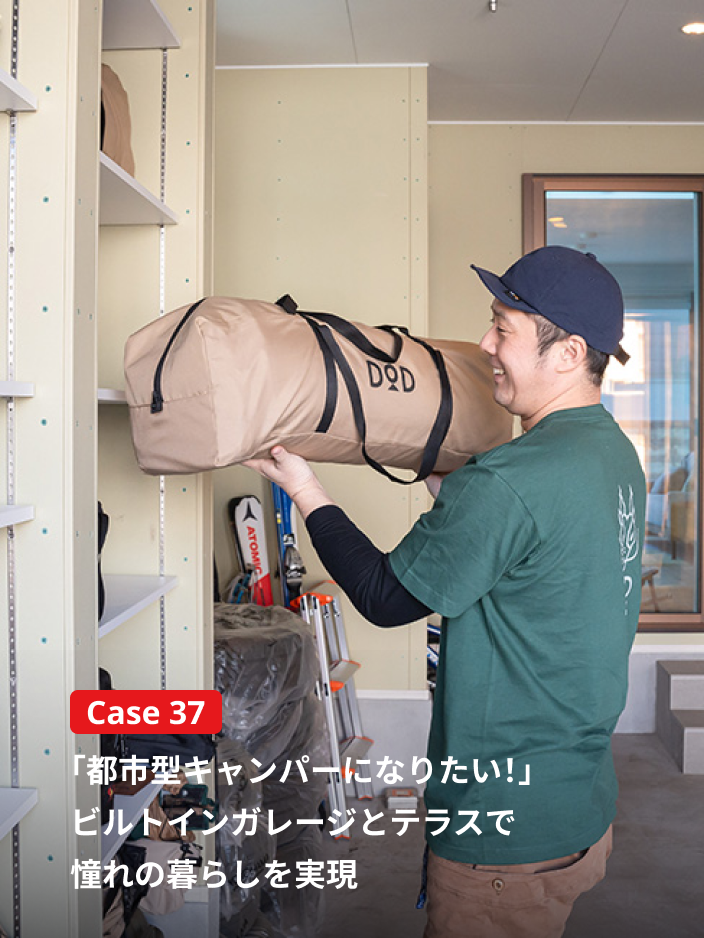
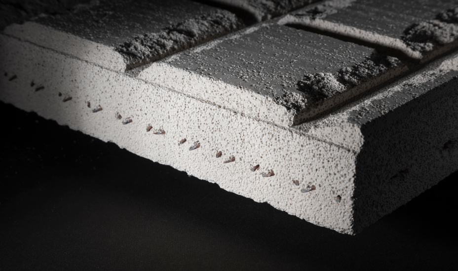
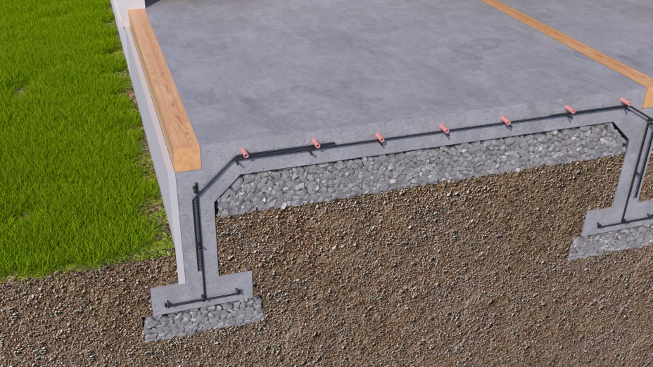
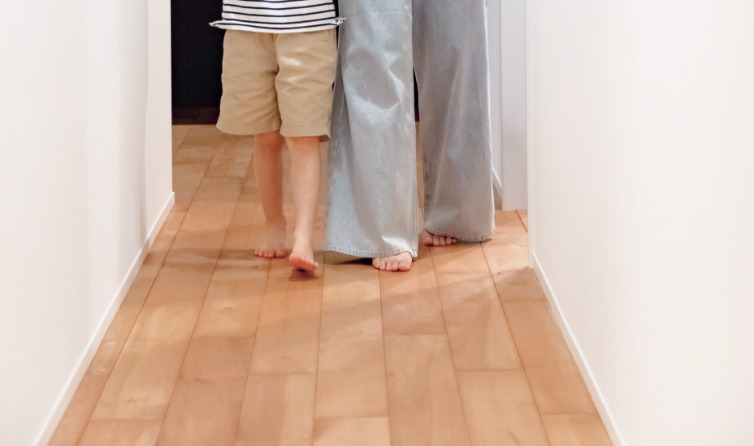
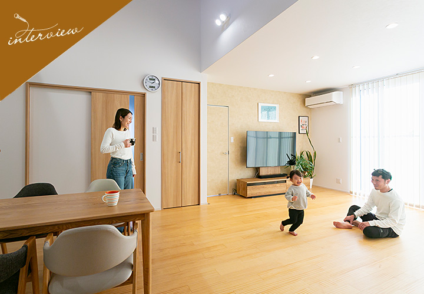

① 会社・基本データ（規模・エリア・対応工法）
1995年、「地球にやさしい家づくり」を理念に設立されたユニバーサルホーム。最大の特徴は住宅フランチャイズ（FC）方式による全国展開と、独自の「地熱床システム」を全棟標準装備していること。FC本部として商品開発・資材調達を一括で行い、地域の加盟工務店が施工を担当するビジネスモデルにより、大手並みの商品力とローコスト系の価格帯を両立させている。
2016年12月、飯田産業により子会社化。現在は飯田グループホールディングス傘下で、分譲住宅日本一のグループ力を背景に注文住宅を展開。累計上棟棟数は52,403棟（2026年3月末日時点）に達し、FC系ハウスメーカーとしての確かな実績を積み上げている。
| 項目 | 内容 |
|---|---|
| 会社名 | 株式会社ユニバーサルホーム（universalhome Inc.） |
| 設立 | 1995年5月 |
| 代表取締役社長 | 三浦 亨 |
| 本社 | 東京都中央区八丁堀二丁目7番1号 |
| 資本金 | 4億9,180万円 |
| 従業員数 | 193名（2025年3月末日）※FC本部 |
| 累計上棟棟数 | 52,403棟（2026年3月末日時点） |
| 対応エリア | 全国（FC加盟店による展開） |
| 親会社 | 株式会社飯田産業（飯田グループHD傘下） |
| 主な工法 | 木造軸組工法（ハイパーフレーム構法） |
| 経営理念 | 万有の英知を集結し人と地球にやさしい家づくりを目指す |
ユニバーサルホームの本質的な強み
他社との最大の差別化ポイントは「地熱床システム」と「高性能外壁材ALC」の2つが標準装備であること。
- 地熱床システム：床下空間を砂利とコンクリートで密閉し、地中熱を活用。1階全面床暖房が標準で付く
- ALC外壁：通常のサイディングの約6倍の断熱性能を持つ軽量気泡コンクリートが標準
- FC方式によるコスト抑制：本部が資材を大量一括調達し、地域工務店がローコストで施工
この「地熱床暖房 + ALC外壁 + FC低価格」の三位一体が、ユニバーサルホーム最大の武器。特に1階全面床暖房が標準で付くハウスメーカーは極めて少ない。
飯田グループによるバックアップ
2016年の飯田産業子会社化以降、分譲住宅日本一の飯田グループのスケールメリットを活用。資材調達力の強化や保証体制の充実が進んでいる。ただし注文住宅のブランド力としてはグループ内では比較的地味な存在であり、知名度ではタマホームやアイフルホームに後れを取る面もある。
顧客満足度データ
| 調査 | 順位 | スコア | 年度 |
|---|---|---|---|
| オリコン顧客満足度（注文住宅） | 17位 | 73.6点/100点 | 2026年 |
| 住宅性能 | — | 77.0点 | 2026年 |
| 金額の納得感 | — | 72.5点 | 2026年 |
| 設備・機器 | — | 75.1点 | 2026年 |
| モデルハウス | — | 76.3点 | 2026年 |
| 保証・アフターサービス | — | 72.6点 | 2026年 |
住宅性能（77.0点）とモデルハウス（76.3点）の評価が高い一方、保証・アフターサービス（72.6点）がやや低め。FC方式ゆえに加盟店ごとのサービス品質にばらつきがあることが影響していると考えられる。
② 商品ラインナップと価格
ユニバーサルホームは自由設計の注文住宅を中心に、ライフスタイル別のコンセプトプランを多数展開。全商品に「地熱床システム」と「ALC外壁」が標準装備されるのが最大の特徴。

主要商品ラインナップ
| 商品名 | 坪単価目安 | タイプ | 主な特徴 |
|---|---|---|---|
| ルピオス（Loopeos） | 60〜85万円（目安・公式非公表） | 二階建て | キッチン中心の回遊動線。家族コミュニケーション重視 |
| ドマーチェ テラスエディション | 65〜90万円（目安・公式非公表） | 二階建て | 土間テラス付き。アウトドアリビングを実現 |
| ナナ・カラ | 55〜75万円（目安・公式非公表） | 二階建て | 3畳のフリースペースを1・2階に配置。テレワーク対応 |
| ファミーユ（Famille） | 50〜65万円（目安・公式非公表） | 二階建て | LDK一直線設計。多彩な外観。規格住宅プラン |
| フェリーチェロ（Felicello） | 55〜70万円（目安・公式非公表） | 二階建て | ママ目線の家事動線。子育て世代向け |
| キャンパーの住みか（DODコラボ） | 公式非公表 | アウトドア特化 | 2021年発表のDODコラボハウス。アウトドアライフスタイル提案 |
| ソラ・イロ+ | 公式非公表 | ZEH | 2013年グッドデザイン賞受賞のZEH商品 |
| Kiduki（きづき） | 公式非公表 | 二階建て | 2014年グッドデザイン賞受賞モデル |
総額の目安（重要）
注文住宅の費用は「本体価格」だけでは終わらない。一般的な内訳は以下の通り。
| 費目 | 割合 | 含まれるもの |
|---|---|---|
| 本体工事費 | 約70% | 建物本体、地熱床システム、ALC外壁、設備 |
| 付帯工事費 | 約20% | 地盤改良、外構、屋外給排水、仮設工事 |
| 諸費用 | 約10% | 登記、住宅ローン手数料、火災保険、引越し |

坪数別の建築総額シミュレーション
| 延床面積 | 本体価格目安 | 建築総額目安 | 月々返済額（35年・0.7%） |
|---|---|---|---|
| 25坪（83㎡） | 1,470万円 | 1,911万円 | 約5.2万円 |
| 30坪（99㎡） | 1,850万円 | 2,406万円 | 約6.5万円 |
| 35坪（116㎡） | 2,265万円 | 2,945万円 | 約8.0万円 |
| 40坪（132㎡） | 2,520万円 | 2,730〜3,500万円 | 約7.4〜9.5万円 |
| 平屋30坪 | 2,545万円 | 3,307万円 | 約9.0万円 |
※月々返済額は頭金なし・ボーナス払いなし・金利0.7%（変動）で試算。金利変動リスクあり。
坪単価の推移（値上がりトレンド）
| 年 | 坪単価目安 | 背景 |
|---|---|---|
| 2015年 | 約40〜50万円 | ローコスト系として認知 |
| 2020年 | 約45〜60万円 | 資材費上昇傾向 |
| 2023年 | 約50〜70万円 | ウッドショック・資材高騰 |
| 2025年 | 約52〜85万円 | 人件費高騰・仕様グレードアップ |
隠れコストに注意
ユニバーサルホームはFC方式のため、加盟店ごとに付帯工事費の見積もりが異なるケースがある。必ず「建築総額」ベースで比較すること。また地熱床システムの特性上、床下収納は設置不可。通常の床下配管メンテナンスもできないため、将来のリフォーム計画にも注意が必要。
③ 構造・耐震性能

ハイパーフレーム構法
ユニバーサルホームの構造は木造軸組工法をベースに、独自の「ハイパーフレーム構法」を採用。エンジニアリングウッド、金物工法、剛性床の3つの技術で耐震性を高めている。
| 技術要素 | 詳細 |
|---|---|
| エンジニアリングウッド | 通常の木材の約1.5倍の強度。柱・梁などの主要構造材に採用 |
| 金物工法 | 高強度・高精度の金物接合により、従来の約2倍の接合強度 |
| 剛性床 | 28mm厚の構造用合板。水平方向の剛性を確保し、ねじれを抑制 |
| 耐震等級 | 最高等級3に対応（プランにより異なる） |
大きな地震で建物が崩壊する最大の原因は、柱や梁が折れるのではなく「接合部分が外れてしまう」こと。ハイパーフレーム構法では、この接合部を鋼板とボルトで強固に固定し、建物全体の剛性を高めている。
地熱床システムの耐震効果
ユニバーサルホーム独自の基礎構造「地熱床システム（すご基礎×心地ゆか）」にも耐震効果がある。
- 地面から床下まで砂利を敷き詰めた密閉構造
- 砂利層が振動を分散・吸収する「制震効果」
- べた基礎のように面全体で建物を支える
- 床下空間がないため、床下での倒壊リスクがゼロ
構造の注意点
ユニバーサルホームはFC方式のため、構造計算の実施有無は加盟店によって異なる場合がある。契約前に「許容応力度計算（構造計算）を実施するか」を必ず確認すること。耐震等級3を確実に取得したい場合は、構造計算の実施を条件として交渉を推奨。
④ 断熱性能

断熱仕様
| 部位 | 断熱材・仕様 |
|---|---|
| 壁 | 吹付硬質ウレタンフォーム（現場発泡） |
| 天井 | 吹付硬質ウレタンフォーム |
| 基礎 | 地熱床システムによる基礎断熱 |
| 外壁 | ALC（断熱性サイディング比約6倍）+ 発泡ウレタンのダブル断熱 |
| 窓（標準） | YKK AP Low-E複層ガラス + 樹脂サッシ（またはアルミ樹脂複合サッシ） |
| UA値（標準・6地域） | 約0.52〜0.60（プラン・仕様により変動） |
| 断熱等級 | 断熱等性能等級5（ZEH基準）相当 |
UA値0.52〜0.60は実際にどのくらいの水準か
| 基準 | UA値（6地域） | ユニバーサルホームの位置 |
|---|---|---|
| 省エネ基準（等級4） | 0.87以下 | 大幅クリア |
| ZEH基準（等級5） | 0.60以下 | クリア |
| ZEH+基準 | 0.50以下 | 標準ではやや届かない |
| HEAT20 G1 | 0.56以下 | 標準でほぼクリア |
| HEAT20 G2 | 0.46以下 | オプション対応 |
| HEAT20 G3 | 0.26以下 | 非対応 |
| 一条工務店（i-smart） | 0.25 | 大きな差がある |
断熱性能の正直な評価
強み
- ALC外壁 + 発泡ウレタンの「ダブル断熱」構造は同価格帯では優秀
- 地熱床システムにより基礎断熱が標準。足元の冷えに強い
- ZEH基準（等級5）を標準仕様でクリアしている
弱み
- UA値0.52〜0.60は「中の上」レベル。HEAT20 G2以上を目指す場合はオプション追加が必要
- 断熱性能で一条工務店（UA値0.25）に大きく引き離されている
- 窓の標準がLow-E複層ガラスで、トリプルガラスは標準装備ではない
- FC加盟店により施工精度にばらつきがあり、断熱性能の実測値にも差が出る可能性
断熱性能を上げたい場合の具体的な方法
| 対策 | 効果 | 追加費用目安 |
|---|---|---|
| 窓をトリプルガラスに変更 | UA値 0.03〜0.05改善 | +30〜60万円 |
| 断熱材の厚み増し | UA値 0.02〜0.04改善 | +20〜40万円 |
| 玄関ドアを高断熱仕様に | UA値 0.01〜0.02改善 | +10〜20万円 |
| ZEH仕様（ソラ・イロ+等）を選択 | UA値 0.60以下を確保 | 商品選択で対応 |
⑤ 気密性能
C値の公表状況
ユニバーサルホームは公式にC値0.5cm²/m²以下を基準値として掲げている。ただし「全棟気密測定を実施する」とは公式には明言されておらず、加盟店による対応差がある。
施主の実測データから見るC値の実態
| C値の範囲 | 傾向 |
|---|---|
| 0.3〜0.5 | 高気密。丁寧な施工の加盟店で達成 |
| 0.5〜1.0 | 標準的。多くの実測報告がこの範囲 |
| 1.0〜2.0 | やや低め。FC店による施工品質のばらつき |
C値の評価基準
| C値 | 評価 | 該当メーカー例 |
|---|---|---|
| 0.5以下 | 高気密住宅 | 一条工務店、スウェーデンハウス |
| 0.5〜1.0 | 中〜高気密 | アイフルホーム、ユニバーサルホーム（上位） |
| 1.0〜2.0 | 標準的 | 大手HM平均 |
| 2.0以上 | 気密不足 | 旧基準の住宅 |
気密性能を高めるためにできること
- 契約前に気密測定の実施を交渉する — 気密測定を標準で行う加盟店を選ぶのがベスト
- 施工中の中間測定を依頼 — 断熱材施工後・内装前の中間測定で問題を早期発見
- C値の保証値を契約書に明記 — 「C値1.0以下を保証」等の条件を交渉
- 気密テープ・気密シートの施工確認 — 現場での施工状況を自分の目で確認
正直に言えば：気密性能を最優先するなら一条工務店（全棟C値0.59以下保証）やスウェーデンハウス（全棟C値測定実施）の方が確実性は高い。ユニバーサルホームの気密性能はFC加盟店の施工力に大きく左右されるため、加盟店選びが極めて重要になる。
⑥ 換気・空調
標準の換気システム
| 項目 | 仕様 |
|---|---|
| 換気方式 | 第1種換気（全熱交換型） |
| 熱交換率 | 約70〜80%（冬の暖気を回収して換気） |
| 24時間換気 | 標準搭載 |
全館空調「ループエアー」（オプション）
ユニバーサルホームは全館空調システム「ループエアー」をオプションで提供。1台のエアコンと換気システムを24時間連続運転させることで、住宅全体を快適な室温に調整する。
| 項目 | 詳細 |
|---|---|
| 方式 | エアコン型全館空調 |
| 標準/オプション | オプション |
| 制御 | 全熱交換型換気 + 空気循環 |
| 対応範囲 | 家全体を均一温度に |
ただし、ユニバーサルホームには1階全面の地熱床暖房が標準装備されているため、全館空調がなくても冬場の1階は十分暖かい。2階の暑さ対策として個別エアコンで対応するケースも多い。
⑦ デザイン

外壁デザイン — ALC外壁の質感
ユニバーサルホームの外観を大きく特徴づけるのが、標準装備の高性能外壁材ALC。厚さ37mmの軽量気泡コンクリートパネルで、ビルや商業施設にも使われる本格的な素材。
ALCの上には塗料に応じた塗装仕上げ（リシン吹付等）が施され、石目調の重厚感ある外観が実現できる。塗装の耐用年数は一般的に約15〜20年とされる。
内装・床材
地熱床暖房が標準のため、床材の選択は暖房効率に影響する重要ポイント。
| 床材 | 特徴 | 床暖房との相性 |
|---|---|---|
| 複合フローリング（標準） | 傷に強く、メンテナンスが容易 | ◎ 最適 |
| 無垢フローリング（オプション） | 天然木の質感。足触りが柔らかい | ○ 床暖房対応材が必要 |
| タイル（オプション） | 土間テラス等に。重厚感あり | ◎ 蓄熱効果で相性良好 |
床材選びの注意：地熱床暖房は蓄熱式のため、無垢フローリングを選ぶ場合は必ず「床暖房対応」の樹種を選ぶこと。非対応の無垢材は反りや割れの原因になる。
設計の自由度
ユニバーサルホームは木造軸組工法ベースのため、設計の自由度は比較的高い。メーターモジュール（1m基準）を採用しており、廊下や階段が尺モジュール（910mm基準）のメーカーより広く取れる。
土間テラスの提案とDODコラボ「キャンパーの住みか」
「ドマーチェ テラスエディション」は屋内に土間テラスを設け、アウトドアリビングという新しいライフスタイルを提案している。また2021年にはアウトドアブランドDODとのコラボハウス「キャンパーの住みか」を発表し、キャンプ好きのライフスタイルに特化した住まいを提案。

グッドデザイン賞は3年連続で受賞しており、受賞対象はそれぞれ「地熱床システム（2012年）」「ソラ・イロ+（2013年）」「Kiduki きづき（2014年）」の3件。
ユニバーサルホームの三種の神器
- 地熱床暖房 — 1階全面が床暖房。冬の光熱費を大幅に削減
- ALC外壁（厚さ37mm） — 60年超の耐久性。塗装の塗り替え周期は一般的に15〜20年程度
- メーターモジュール — 廊下幅が広く、車椅子対応もしやすいユニバーサルデザイン
⑧ 保証・メンテナンス
ユニバーサルホームは「5つの安心保証」を展開。FC系メーカーとしてはかなり手厚い保証体制。
| 保証項目 | 初期保証 | 最長保証 | 延長条件 |
|---|---|---|---|
| 構造体・防水 | 20年 | 60年 | 20年目以降、10年ごとに有償メンテナンスで10年延長 |
| 防蟻（シロアリ） | 20年 | 60年 | 定められた時期に防蟻処理・点検実施で延長 |
| 地盤 | 生涯保証 | 生涯 | 20年目以降、10年ごとに有償調査。1物件最高5,000万円 |
| 住宅設備 | 10年 | 10年 | 延長なし。給湯器・キッチン・バス・トイレ・インターホン・換気等 |
| 完成保証 | 着工〜完成 | — | 施工会社倒産時の第三者機関保証 |
定期点検スケジュール
引渡しから14回の定期点検を実施：6ヶ月・1年・2年・5年・10年・15年・20年・25年の計8回（+中間点検）。
保証の注意点
- 構造体60年保証は「自動」ではない。20年目以降は有償メンテナンスが延長条件
- 有償メンテナンス費用は数十万〜100万円以上になることも。事前に概算を確認すること
- FC加盟店が廃業した場合のアフターサービス体制を契約前に確認すること（完成保証はあるが、引渡し後の長期対応は別）
- 地熱床システムの特性上、床下の点検・メンテナンスは通常の住宅と異なる。基礎内部へのアクセスが制限される
⑨ 建築期間
| フェーズ | 目安期間 | 内容 |
|---|---|---|
| 初回接触〜契約 | 1〜3ヶ月 | モデルハウス見学、プラン相談、見積もり比較 |
| 間取り・仕様打ち合わせ | 1〜2ヶ月 | 間取り確定、設備選定、コーディネート |
| 着工準備 | 1〜2ヶ月 | 確認申請、地盤調査、地盤改良（必要時） |
| 基礎工事 | 2〜3週間 | 地熱床システムの基礎施工（砂利敷き〜コンクリート打設〜温水パイプ敷設） |
| 棟上げ〜大工工事 | 1〜1.5ヶ月 | 構造体組み上げ、断熱施工、内装下地 |
| 内装・設備・外構 | 1〜2ヶ月 | 内装仕上げ、設備取付、外構工事 |
| 完了検査〜引渡し | 2〜3週間 | 施主検査、手直し、引渡し |
合計：約8〜14ヶ月（初回接触から引渡しまで）
地熱床システムの基礎工事は通常のべた基礎より工程が多い（砂利敷き→防湿シート→温水パイプ→コンクリート打設）ため、基礎工事だけで2〜3週間を見ておくと安心。逆に、棟上げ後の工程は一般的な木造住宅と大差ない。
⑩ 客層・向き不向き
年収の目安
| 条件 | 世帯年収目安 | 建築総額レンジ |
|---|---|---|
| 土地あり（30坪プラン） | 400〜600万円 | 2,000〜2,800万円 |
| 土地なし（30坪プラン + 土地） | 550〜800万円 | 3,500〜5,000万円（土地代込み） |
ユニバーサルホームのボリュームゾーンは世帯年収400〜700万円。地熱床暖房とALC外壁が標準装備で、他社のオプション費用分がすでに含まれていると考えれば、実質的なコストパフォーマンスは高い。
向いている人
- 1階全面床暖房を標準で欲しい（最大の強み）
- コスパ重視で、ローコスト帯でも性能を妥協したくない
- ALC外壁の重厚感・耐久性に魅力を感じる
- 地震・水害に強い基礎構造を重視する
- 地域密着の工務店スタイルが好み（FC方式）
- メーターモジュールで広い廊下・階段が欲しい
向かない人
- 断熱・気密を最高水準にしたい（→ 一条工務店が適任）
- ブランド力・知名度を重視する（→ 積水ハウス・住友林業）
- アフターサービスの均一性を求める（→ 直営系メーカー）
- 床下収納やリフォームの自由度を重視する
- 2階の暑さ対策を重視する（地熱床暖房は1階のみ）
- 全国どこでも同じ施工品質を求める（→ 工場生産系メーカー）
⑪ 他社との比較表
| 比較 | ユニバーサル | 一条工務店 | タマホーム | アイフル | クレバリー | アエラ |
|---|---|---|---|---|---|---|
| 坪単価 | 52〜85 | 70〜105 | 40〜80 | 40〜75 | 45〜80 | 45〜75 |
| UA値（6地域） | 0.52〜0.60 | 0.25 | 0.60〜0.87 | 0.44〜0.60 | 0.60前後 | 0.39 |
| 床暖房 | 1階全面標準 | 全館標準 | オプション | オプション | オプション | オプション |
| 外壁 | ALC標準 | タイル標準 | サイディング | サイディング | タイル標準 | サイディング |
| 初期保証 | 20年 | 30年 | 10年 | 20年 | 10年 | 20年 |
| 向く人 | 床暖房・コスパ | 断熱・気密最優先 | 低価格最優先 | キッズデザイン | タイル外壁 | 外張断熱 |
ユニバーサルホームの立ち位置：坪単価52〜85万円のミドル〜ローコスト帯で、「1階全面床暖房標準 + ALC外壁標準」という独自のポジションを確立。同価格帯で床暖房が標準装備のメーカーは他にほぼ存在しない。ただし断熱・気密性能では一条工務店に大きく差をつけられている。
⑫ よくある後悔・失敗事例
後悔①：電気代が想定より高かった
地熱床暖房は1階全面を暖めるため、光熱費が月2〜3万円に達するケースがある。特にオール電化の場合、冬場の電気代は注意が必要。
対策：蓄熱式なので間欠運転を活用する。深夜電力プランを契約し、夜間に蓄熱することで電気代を30〜40%削減可能。事前に電力会社のシミュレーションで月々の光熱費を試算しておくこと。
後悔②：床下収納ができない
地熱床システムは床下を砂利とコンクリートで密閉するため、一般的な床下収納が設置できない。「床下にパントリーを作りたかった」という後悔が多い。
対策：設計段階で壁面収納・パントリー・ロフトなど代替の収納計画を立てておく。床下が使えない分、他のスペースで収納量を確保する発想が必要。
後悔③：長期優良住宅の認定が取りにくい
地熱床システムの基礎構造では、長期優良住宅の認定条件「床下の有効高さ330mm以上」を満たしにくい。追加対応が必要になり、別途費用がかかることも。
対策：長期優良住宅認定が必要な場合（住宅ローン控除の最大化、フラット35S利用など）は、打ち合わせの最初の段階で明確に伝える。追加費用の見積もりを事前に取得する。
後悔④：FC加盟店の対応に差があった
ユニバーサルホームはFC方式のため、加盟店によって営業対応・施工品質・アフターサービスの質が大きく異なる。「契約後に態度が変わった」「引渡し後の対応が遅い」という口コミが少なくない。
対策：契約前に複数の加盟店を比較する。口コミ・施工実績・会社の財務状況を調べる。アフターサービスの体制（連絡窓口・対応時間・担当者の固定）を書面で確認する。
後悔⑤：2階が暑い
地熱床暖房は1階のみの効果。2階は通常の住宅と変わらないため、夏場に2階が暑いという不満が出やすい。特に小屋裏に近い2階の居室は暑くなりがち。
対策：2階にはエアコンを適切に配置する。屋根断熱の強化をオプションで検討。全館空調「ループエアー」の導入も選択肢。
後悔⑥：将来のリフォームの制約
地熱床システムの基礎は床下配管のメンテナンスやリフォームに制約がある。水回りの位置変更が通常の住宅より難しい。
対策：将来のリフォーム計画（水回り移設・間取り変更）を設計段階で想定しておく。配管ルートの確認と、メンテナンス方法を工務店に事前確認する。
⑬ まとめ
- 1階全面床暖房が標準装備 — 他社にない圧倒的な差別化ポイント。冬の快適性が段違い
- ALC外壁が標準 — 60年超の耐久性。サイディングの約6倍の断熱性能
- 地熱床システムの耐震・防蟻効果 — 床下密閉で湿気・シロアリをシャットアウト
- ミドルコスト帯のコスパ — 床暖房+ALC込みの坪単価52〜85万円は割安
- メーターモジュール標準 — 廊下や階段が広く、バリアフリー対応がしやすい
- 保証の手厚さ — 構造体60年・地盤生涯保証はFC系としてはトップクラス
- 断熱・気密は「中の上」 — 一条工務店やスウェーデンハウスには及ばない
- FC方式の施工品質ばらつき — 加盟店選びがそのまま品質に直結する
- 床下アクセス不可 — リフォーム・メンテナンスの制約が大きい
- 2階は普通の住宅 — 地熱床暖房の恩恵は1階のみ
こんな人に強くお勧め
「1階で過ごす時間が長い家族」に最も適したハウスメーカー。リビング・ダイニング・キッチンが生活の中心で、冬の寒さが嫌いで、でも予算は2,000〜3,000万円台に抑えたい——そんな方にとって、ユニバーサルホームの「地熱床暖房 + ALC外壁」のコスパは他社にない魅力。FC加盟店の見極めさえしっかりすれば、満足度の高い家づくりが実現できる。